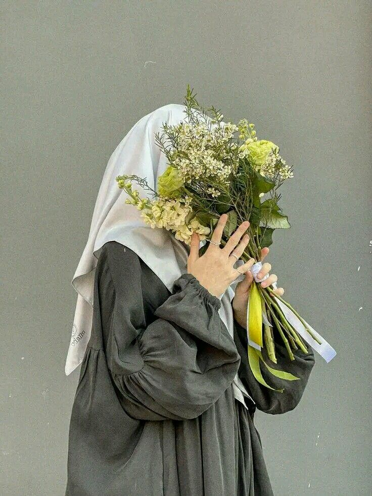
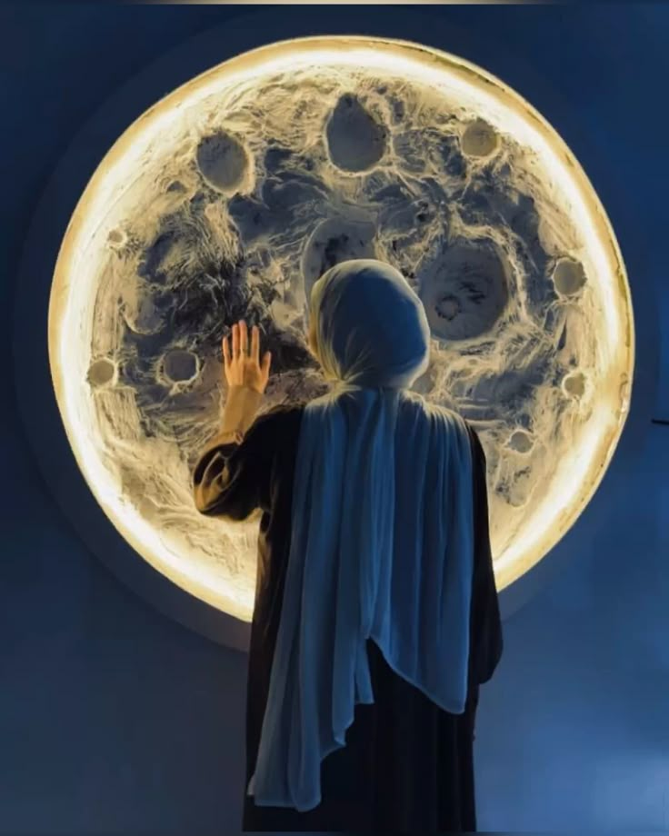
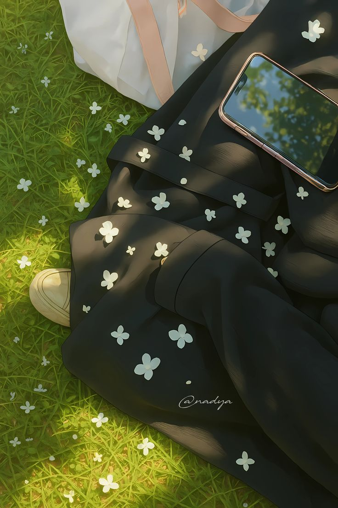
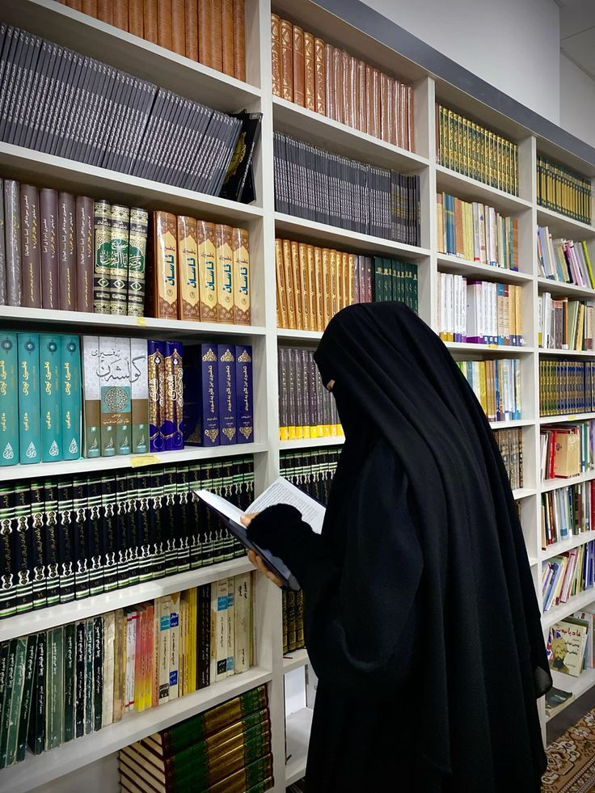
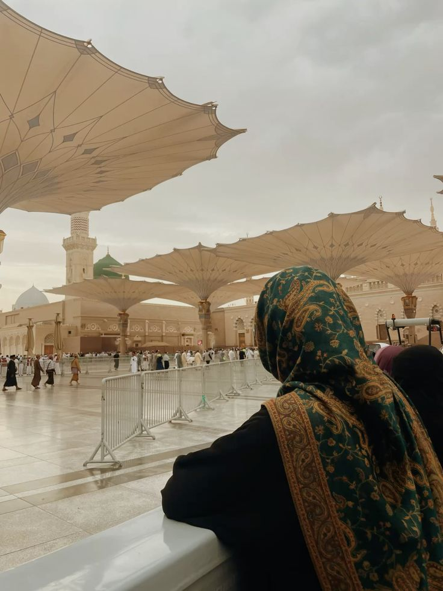
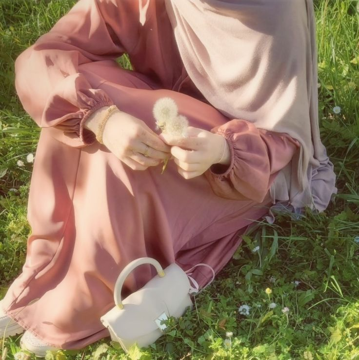

BLOG
Teruntuk setiap wanita yang melangkah anggun dalam balutan iman dan keindahan.
Di sini, kami hadir bukan hanya untuk menginspirasi gaya, tapi juga menghidupkan makna.
Sebab setiap helaian kain yang kau kenakan, bisa menjadi saksi cinta dan ibadah kepada-Nya.
"Dan pakaian takwa itulah yang paling baik." (QS. Al-A’raf: 26)






Abaya Sepanjang Musim
by Salma Lathifa
Mengenal Bahan Abaya ; Nyaman, Ringan, Syar’i
by Dewi Nurani
Abaya di Tengah Dunia Modern
by Amara Fitra
"Sesungguhnya pada yang demikian itu benar-benar terdapat tanda-tanda (kekuasaan Allah) bagi orang-orang yang berpikir."
(QS. Ar-Rum: 21)
"Dan barang siapa mengagungkan syiar-syiar Allah, maka sesungguhnya itu berasal dari ketakwaan hati."
(QS. Al-Hajj: 32)
Warna Warni Abaya dan Makna Dibaliknya
by Hana Zahira
Ketika Pakaian Menjadi Ibadah
by Ustadzah Nurul Azizah